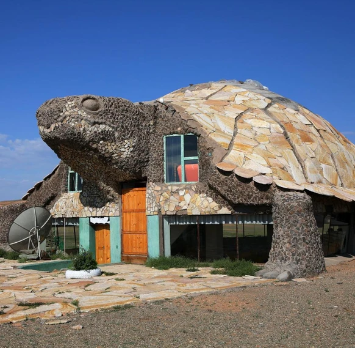
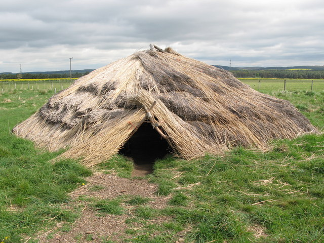
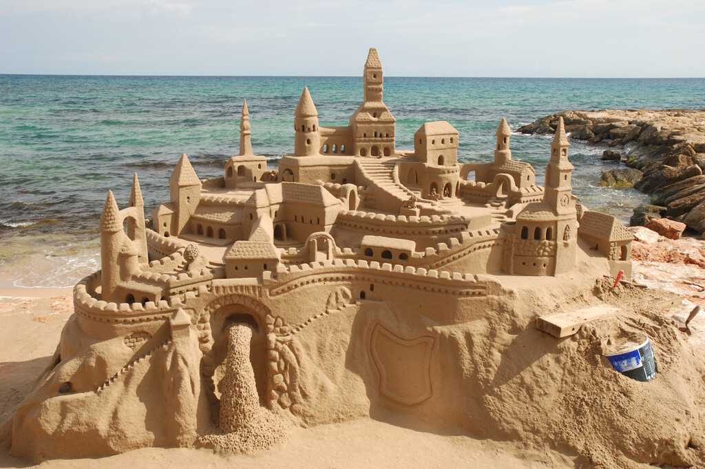

Unsere Projekte
Hier finden Sie eine Auswahl unserer vergangenen Bauprojekte.

Touristencamp in der Wüste Gobi
Ein modernes Wüstencamp mit Charm, gefertigt aus natürlichen Materialien in kecker Schildkrötenoptik.
„Ein Projekt, bei dem Architektur und Natur besonders gut miteinander verbunden wurden.“

Bürohaus Mitte
Ein modernes Bürogebäude mit offenen Arbeitsbereichen und einer hellen, freundlichen Atmosphäre.
„Unser Ziel war ein Arbeitsplatz, an dem Menschen gerne zusammenarbeiten.“

Strandvilla 1928
Die historische Strandvilla wurde behutsam saniert und mit modernen Elementen ergänzt.
„Alte Architektur zu erhalten und neu zu interpretieren, ist für uns eine besondere Aufgabe.“